✓ সীমাহীন পরিচিতি এবং তালিকা✓ মাল্টি-এসএমটিপি ফ্রি রিলে স্ট্যাকিং✓ বিনামূল্যে Google Gemini এবং OpenAI কী✓ 100% ডেটা প্রাইভেসি (জিডিপিআর রেডি)
অল-ইন-ওয়ান স্বায়ত্তশাসিত মার্কেটিং স্যুট
এআই মার্কেটিং এক্সপার্ট (AIME) পরিচিতি
এআই মার্কেটিং এক্সপার্ট (v1.2.7) আপনার ওয়ার্ডপ্রেস ওয়েবসাইটকে একটি স্বয়ংক্রিয়, এআই-চালিত মার্কেটিং হেডকোয়ার্টারে রূপান্তরিত করে। বিভিন্ন পৃথক পৃথক SaaS সাবস্ক্রিপশনে (যেমন Mailchimp, Apollo, Zapier, Jasper, CartBounty, Semrush, বা Intercom) প্রতি বছর হাজার হাজার ডলার ব্যয় না করে সরাসরি আপনার ওয়ার্ডপ্রেস ড্যাশবোর্ডে আনলিমিটেড সাবস্ক্রাইবার সহ একটি সম্পূর্ণ ইকোসিস্টেম উপভোগ করুন।
স্বায়ত্তশাসিত কোল্ড আউটরিচ
কাজের পদবী ও ইন্ডাস্ট্রি অনুযায়ী যাচাইকৃত B2B লিড খুঁজুন, লাইভ DNS MX ভেরিফিকেশন করুন এবং কোল্ড ইমেইল নার্চারিং ফানেলে যুক্ত করুন।
ভিজ্যুয়াল অটোমেশন ক্যানভাস
ড্র্যাগ-অ্যান্ড-ড্রপ নোড ও ডিলে টাইমার (ঘণ্টা/দিন) দিয়ে ব্রাঞ্চিং মাল্টি-স্টেপ ওয়ার্কফ্লো তৈরি করুন, অথবা সাধারণ টেক্সট প্রম্পট দিয়ে পুরো গ্রাফ তৈরি করুন।
উকমার্স কার্ট রিকভারি
অর্ডার সাবমিট করার আগেই চেকআউট চলাকালীন ক্রেতার ইমেইল লাইভ ক্যাপচার করুন এবং ১-ক্লিক সিঙ্গেল-আইটেম ও সিঙ্গেল-কোয়ান্টিটি ডিপ লিঙ্কের মাধ্যমে হারানো সেল পুনরুদ্ধার করুন।
জিরো টুল সুইচিং: ইমেইল ক্যাম্পেইন, এসইও অডিট, ব্লগ আর্টিকেল তৈরি, চ্যাটবট এবং সোশ্যাল পোস্ট—সবকিছুই সরাসরি আপনার ওয়ার্ডপ্রেস অ্যাডমিনের ভিতরে থাকবে।
আপনার নিজস্ব এআই ও এপিআই কী: AES-256-GCM এনক্রিপশনের সাথে Google AI Studio (ফ্রি জেমিনি টিয়ার), OpenAI, Anthropic Claude বা OpenRouter কানেক্ট করুন।
সাবস্ক্রাইবার বৃদ্ধিতে কোনো মাসিক জরিমানা নেই: Mailchimp বা Klaviyo-এর মতো নয়; এর ফ্রি প্ল্যানেও আপনি আনলিমিটেড কন্টাক্ট সংরক্ষণ ও পরিচালনা করতে পারবেন।
সমস্ত সংবেদনশীল শংসাপত্র (AI প্রদানকারী API কী, SMTP পাসওয়ার্ড, OAuth অ্যাক্সেস টোকেন) স্বয়ংক্রিয়ভাবে আপনার মাইএসকিউএল ডাটাবেসে বিশ্রামে এনক্রিপ্ট করা হয় AES-256-GCM আপনার ওয়ার্ডপ্রেস সিকিউরিটি সল্ট থেকে প্রাপ্ত কী দিয়ে (wp-config.php) । কোনও সাধারণ পাঠ্য গোপনীয়তা কখনও লগ করা বা প্রকাশ করা হয় না ।
কুইক স্টার্ট (৫ মিনিটের লঞ্চ প্ল্যান)
1
ফ্রি এআই কানেক্ট করুন ($০ খরচ)
-এ যান AI প্রদানকারীগণ, Google AI স্টুডিও থেকে আপনার বিনামূল্যে জেমিনি API কী পেস্ট করুন এবং ক্লিক করুন টেস্ট কানেকশন.
2
SMTP কনফিগার করুন
মধ্যে ইমেইল মার্কেটিং → SMTP, আপনার Gmail অ্যাপ পাসওয়ার্ড, Brevo, SendGrid, বা হোস্ট SMTP শংসাপত্র লিখুন এবং একটি পরীক্ষার ইমেল পাঠান ।
3
কার্ট রিকভারি সক্রিয় করুন
এর অধীনে ওয়ার্কফ্লো অটোমেশন, পূর্বনির্ধারিত "WooCommerce পরিত্যক্ত কার্ট রিকভারি" টেমপ্লেটটি সক্রিয় করুন ।
4
কোল্ড লিডগুলি আবিষ্কার করুন
এর অধীনে ইমেল মার্কেটিং → লিড ফাইন্ডার, আপনার লক্ষ্য কুলুঙ্গি অনুসন্ধান করুন (যেমন "মার্কেটিং ডিরেক্টর, মার্কিন যুক্তরাষ্ট্র") ।
🔥 হট আইটেম ও শক্তিশালী ফিচারসমূহ
এখানে এআই মার্কেটিং বিশেষজ্ঞের চারটি সর্বোচ্চ চাহিদা, গেম-চেঞ্জিং বৈশিষ্ট্য রয়েছে যা এজেন্সি মালিক, স্টোর ম্যানেজার এবং বিপণনকারীদের জন্য অবিলম্বে ROI সরবরাহ করে:
হত্যাকারীর বৈশিষ্ট্য 1
B2B লিড ফাইন্ডার ও অটোপাইলট পাইপলাইন
চাকরির শিরোনাম, শিল্প এবং কোনও বহিরাগত অ্যাপোলো সাবস্ক্রিপশন ছাড়াই দেশ অনুসারে হাজার হাজার যাচাইকৃত B2B সম্ভাবনা খুঁজুন । রিয়েল-টাইম DNS MX বৈধতা অবৈধ ডোমেনগুলি ফিল্টার করে এবং যাচাইকৃত লিডগুলি সরাসরি ঠান্ডা পরিচর্যা ক্রমগুলিতে তালিকাভুক্ত করে ।
টাইপ করার সময় চেকআউটের সময় অতিথি ক্রেতার ইমেলগুলি ক্যাপচার করে । একক আইটেম এবং একক পরিমাণের গভীর লিঙ্ক সহ স্বয়ংক্রিয়ভাবে পুনরুদ্ধার ইমেলগুলি প্রেরণ করে যাতে গ্রাহকরা ফিরে আসার পরে দুর্ঘটনাক্রমে সদৃশ আইটেমগুলি কখনও কিনে না ।
আপনার বিপণন প্রবাহকে সাধারণ প্রাকৃতিক ভাষায় বর্ণনা করুন (যেমন, "কার্ট পরিত্যাগের 1 ঘন্টা পরে 15% ছাড়ের ইমেল পাঠান এবং খোলা না থাকলে 2 দিনের মধ্যে অনুসরণ করুন") । AI স্বয়ংক্রিয়ভাবে ক্যানভাসে সমস্ত নোড, টাইমার, শর্ত এবং ইমেল কপি তৈরি করে ।
দীর্ঘ ফর্ম 2,000+ ওয়ার্ড এসইও নিবন্ধ তৈরি করে যা এআই ডিটেক্টরগুলিকে বাইপাস করে যখন কঠোরভাবে হেডার, ফর্ম্যাট করা তুলনা টেবিল, কী টেকওয়ে এবং প্রায়শই জিজ্ঞাসিত প্রশ্নাবলী স্কিমা সংরক্ষণ করে ।
প্রধান প্লাগইন ড্যাশবোর্ড আপনার মিশন কন্ট্রোল সেন্টার হিসাবে কাজ করে, সমস্ত সক্রিয় মডিউল জুড়ে রিয়েল-টাইম পারফরম্যান্স সূচক এবং অপারেশনাল স্বাস্থ্যকে একত্রিত করে ।
চিত্র 1.1: রিয়েল-টাইম KPI মেট্রিক্স, মডিউল শর্টকাট এবং ট্রেন্ড চার্ট সহ ইউনিফাইড ড্যাশবোর্ড
ড্যাশবোর্ডের মূল উপাদানসমূহ
শীর্ষ KPI কার্ড: মোট সক্রিয় গ্রাহক, গড় ইমেল ওপেন রেট (CTR), সক্রিয় স্বয়ংক্রিয় ওয়ার্কফ্লো এবং আনুমানিক মাসিক খরচ সাশ্রয় ।
কুইক অ্যাকশন শর্টকাট: একটি নতুন প্রচারাভিযানের খসড়া তৈরি করতে, একটি AI ব্লগ পোস্ট তৈরি করতে, সোশ্যাল মিডিয়া শিডিউল করতে বা কার্ট পুনরুদ্ধারের পর্যালোচনা করতে এক-ক্লিক লঞ্চার ।
সিস্টেম হেলথ মনিটর: সবুজ/লাল সূচকগুলি যাচাই করে যে ব্যাকগ্রাউন্ড ক্রোন কর্মীরা বিলম্ব ছাড়াই সময়সূচীতে গুলি চালাচ্ছে ।
বিশেষ টিপস: যদি আপনার ওপেন রেট ২০%-এর নিচে নেমে যায়, তবে সাবজেক্ট লাইন আকর্ষণীয় করতে বিল্ট-ইন এআই টুলস ব্যবহার করুন এবং ভিন্ন সময়ে ইমেইল পাঠিয়ে টেস্ট করুন।
২.২ কন্টাক্ট ডিরেক্টরি (সেন্ট্রাল সিআরএম ও লিড প্রোফাইল)
কন্টাক্ট ডিরেক্টরি আপনার নিজস্ব সিআরএম হিসেবে কাজ করে, যা প্রতিটি গ্রাহকের আচরণগত ডেটা, লাইফটাইম পারচেজ হিস্ট্রি এবং যোগাযোগের বিস্তারিত রেকর্ড সংরক্ষণ করে।
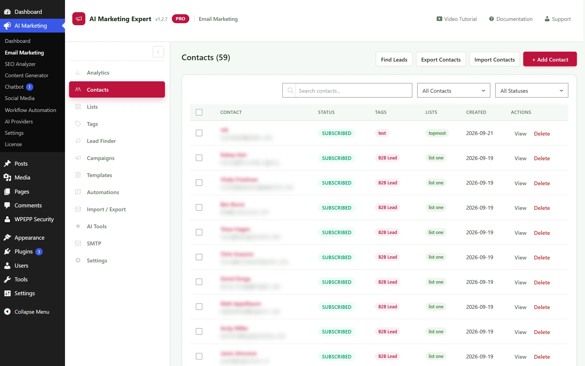
চিত্র ২.২: কন্টাক্ট ডিরেক্টরি — পেজিনেটেড টেবিল ও বাল্ক ট্যাগ/লিস্ট অ্যাকশন (গ্রাহকদের ইমেইল সুরক্ষার্থে ব্লার করা হয়েছে)
বিস্তারিত কাস্টমার প্রোফাইল
যেকোনো কন্টাক্ট সারিতে ক্লিক করলে বিস্তারিত কাস্টমার প্রোফাইল ওপেন হয়, যেখানে থাকে:
অ্যাক্টিভিটি টাইমলাইন: প্রেরিত প্রতিটি ব্রডকাস্ট, ইমেইল ওপেন, লিঙ্ক ক্লিক, পরিত্যক্ত কার্ট এবং সম্পন্ন হওয়া অর্ডারের কালানুক্রমিক লগ।
ই-কমার্স মেট্রিক্স: কাস্টমার লাইফটাইম ভ্যালু (LTV), মোট অর্ডারের সংখ্যা, গড়ে অর্ডারের মান (AOV) এবং সর্বশেষ কেনাকাটার তারিখ।
ডায়নামিক সেগমেন্টেশন ট্যাগ: আচরণগত ট্যাগগুলো দেখুন ও পরিবর্তন করুন (যেমন: b2b-lead, cart-abandoner, vip-buyer).
GDPR ও ডেটা প্রাইভেসি কন্ট্রোল: আন্তর্জাতিক প্রাইভেসি আইন মানতে ১-ক্লিকে কাস্টমার প্রোফাইল এক্সপোর্ট এবং তাত্ক্ষণিক স্থায়ীভাবে বেনামী (Anonymize) করার সুবিধা।
বাল্ক অ্যাকশন ও সেগমেন্টেশন সুবিধা
কোনো প্রকার ল্যাগ ছাড়াই হাজার হাজার কন্টাক্ট সহজে পরিচালনা করুন:
বাল্ক অপারেশনসমূহ: একসাথে একাধিক কন্টাক্ট সিলেক্ট করে ট্যাগ অ্যাসাইন করুন, অটোমেটেড ড্রিপ সিকোয়েন্সে যোগ করুন বা অন্য লিস্টে স্থানান্তর করুন।
মাল্টি-ফিল্ড সার্চ ও ফিল্টার: স্ট্যাটাস দিয়ে তাৎক্ষণিক ফিল্টার করুন (সাবস্ক্রাইবড, বাউন্সড, আনসাবস্ক্রাইবড), লিস্টের নাম, ট্যাগের কম্বিনেশন বা রেজিস্ট্রেশনের তারিখ অনুযায়ী।
স্মার্ট CSV ইমপোর্টার: Mailchimp বা Klaviyo থেকে অটোমেটিক CSV হেডার ডিটেকশন এবং কাস্টম ফিল্ড ম্যাপিং সহ কন্টাক্ট লিস্ট ইমপোর্ট করুন।
২.৩ লিস্ট ম্যানেজমেন্ট
আপনার অডিয়েন্সকে বিভিন্ন টার্গেটেড মেইলিং লিস্টে ভাগ করুন (যেমন: "ভিআইপি ক্রেতা", "নিউজলেটার সাবস্ক্রাইবার", "কোল্ড B2B প্রস্পেক্ট")।
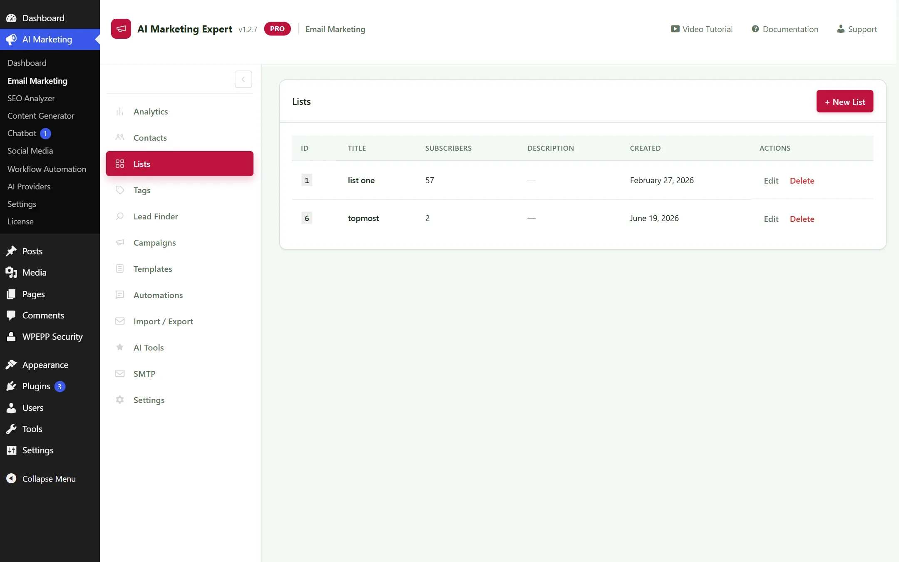
চিত্র ২.৩: লিস্ট ম্যানেজার — অডিয়েন্স সেগমেন্টেশন এবং কন্টাক্ট সংখ্যা
২.৪ ট্যাগ সিস্টেম
গ্রাহকের এনগেজমেন্ট ট্র্যাক করতে অটোমেটিক বা ম্যানুয়ালি ট্যাগ যুক্ত করুন। যেমন কোনো গ্রাহক কার্ট রিকভারি লিঙ্কে ক্লিক করলে তাকে ট্যাগ করুন: interested-buyer.
যাচাইকৃত লিডগুলো রিভিউ করে ক্লিক করুন কোল্ড সিকোয়েন্সে যুক্ত করুন.
রিয়েল-টাইম DNS MX ভেরিফিকেশন:
ইমপোর্ট করার আগেই সিস্টেমটি ডোমেইনের DNS MX রেকর্ড লাইভ ভেরিফাই করে। ডিসপোজেবল ও ইনভ্যালিড ইমেইল সরাসরি বাতিল হয়ে যায়, যা আপনার সেন্ডার রেপুটেশন সুরক্ষিত রাখে।
২.৬ ক্যাম্পেইনস (ইমেইল ব্রডকাস্ট)
টার্গেটেড নিউজলেটার বা প্রমোশনাল ক্যাম্পেইন তৈরি করুন, নির্দিষ্ট সময় অনুযায়ী শিডিউল করুন এবং অডিয়েন্স লিস্টে পাঠান।
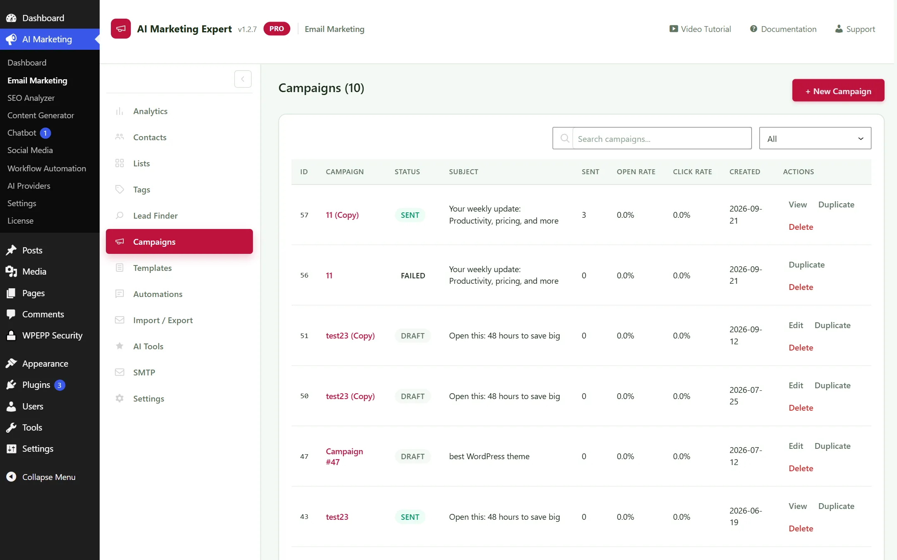
চিত্র ২.৬: ব্রডকাস্ট ক্যাম্পেইনস — ড্রাফট, শিডিউলড এবং সম্পন্ন হওয়া ক্যাম্পেইন তালিকা
২.৭ টেমপ্লেট লাইব্রেরি ও ভিজ্যুয়াল বিল্ডার
হেডার, বাটন, উকমার্স প্রোডাক্ট গ্রিড এবং সোশ্যাল আইকন সমৃদ্ধ আধুনিক ও মোবাইল-ফ্রেন্ডলি ইমেইল টেমপ্লেটের সমৃদ্ধ গ্যালারি।
সহজ ফিল্ড-ম্যাপিং টুলের সাহায্যে CSV আপলোড করে Mailchimp, Klaviyo বা FluentCRM থেকে আপনার কন্টাক্টগুলো মাইগ্রেট করুন।
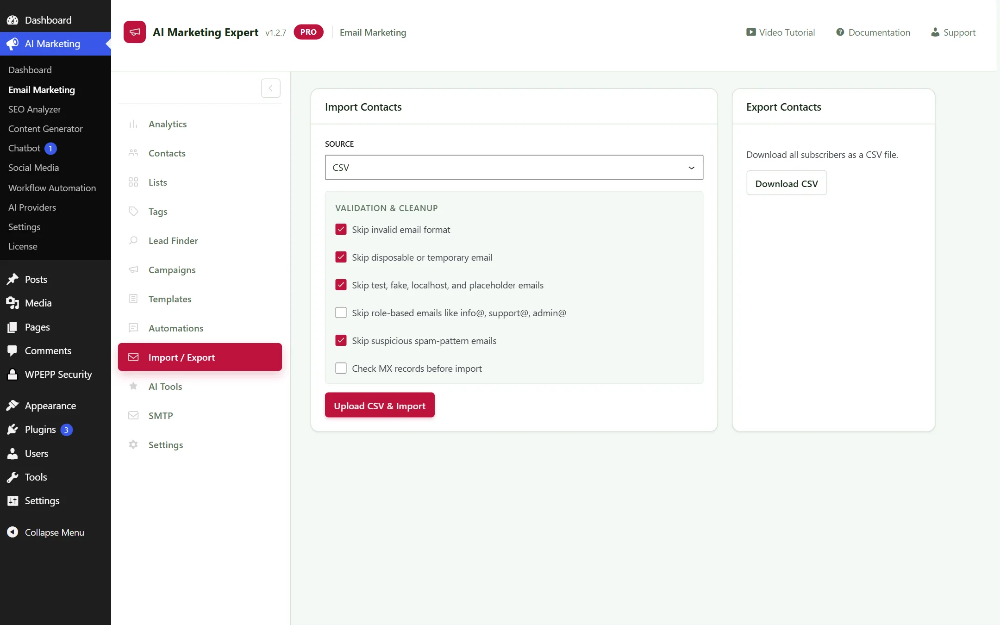
চিত্র ২.৯: কন্টাক্ট ইমপোর্ট টুল ও CSV কলাম ম্যাপিং ইন্টারফেস
২.১০ এআই কপিরাইটিং টুলস
সংযুক্ত এআই মডেলের সহায়তায় আকর্ষণীয় সাবজেক্ট লাইন, প্রি-হেডার এবং কনভার্ট করার মতো চমৎকার ইমেইল কপি লিখুন।
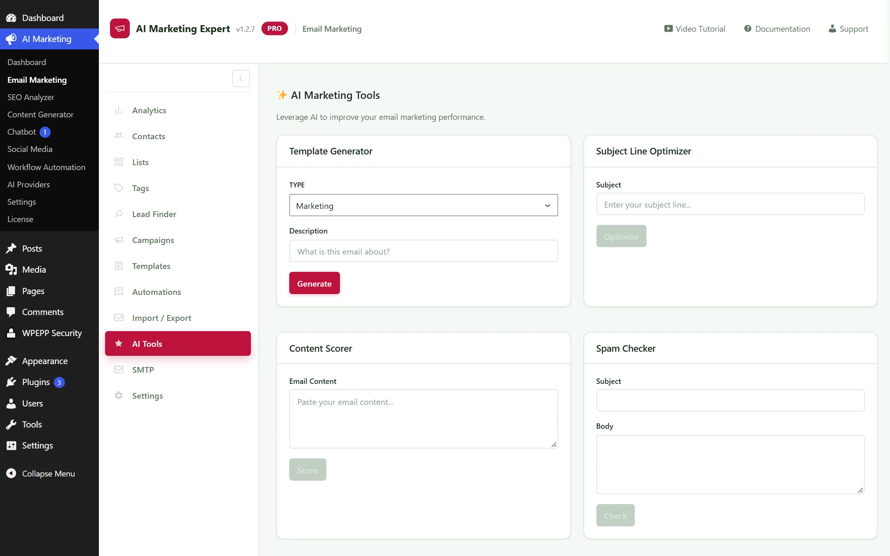
চিত্র ২.১০: এআই সাবজেক্ট লাইন স্কোরার ও কন্টেন্ট অপটিমাইজার
২.১১ এসএমটিপি মাল্টি-রিলে ইঞ্জিন ও রিয়েল-টাইম কলব্যাক
কোনো অতিরিক্ত সাবস্ক্রিপশন ছাড়াই কোটি কোটি ট্রানজ্যাকশনাল ও মার্কেটিং ইমেইল সরাসরি গ্রাহকের প্রাইমারি ইনবক্সে পৌঁছানোর জন্য একটি শক্তিশালী এন্টারপ্রাইজ গ্রেড এসএমটিপি ইঞ্জিন।
একটিমাত্র দামি প্রোভাইডারের উপর নির্ভরশীল না হয়ে আপনি একাধিক ফ্রি এসএমটিপি প্রোভাইডার একসাথে সেট করতে পারেন। রাউন্ড-রবিন রোটেশনের মাধ্যমে বিনামূল্যে প্রতিদিন হাজার হাজার ইমেইল পাঠান:
তাৎক্ষণিক বাউন্স ট্র্যাকিং: যখন SendGrid, Brevo বা Amazon SES কোনো হার্ড বাউন্স ডিটেক্ট করে, কলব্যাকটি সাথে সাথে রান হয় এবং সাবস্ক্রাইবারকে মার্ক করে: BOUNCED, যার ফলে ভবিষ্যতে সেই ঠিকানায় আর কোনো মেইল পাঠানো হয় না।
স্প্যাম রিপোর্ট দমন: কোনো গ্রাহক যদি "Report Spam"-এ ক্লিক করেন, তবে ওয়েবহুক স্বয়ংক্রিয়ভাবে সেই ইমেইলটিকে সকল সক্রিয় ফানেল থেকে বাদ দেয়।
আইপি ওয়ার্ম-আপ ও সেন্ডিং থ্রটলিং: নতুন ডোমেইনের ক্ষেত্রে সবসময় সেন্ডিং স্পিড থ্রটলার কনফিগার করুন Module Settings-এর অধীনে প্রতি ৫ মিনিটে ২০টির বেশি ইমেইল পাঠাবেন না। প্রতিদিন ব্যাচের আকার ১৫% করে বাড়িয়ে মজবুত ডোমেন রেপুটেশন গড়ে তুলুন।
উকমার্স ক্যাটালগ সিঙ্ক: পণ্যের দাম, স্টক স্ট্যাটাস বা বিবরণ পরিবর্তিত হলে চ্যাটবট স্বয়ংক্রিয়ভাবে তার তথ্য আপডেট করে নেয় যাতে ক্রেতাদের সঠিক উত্তর দেওয়া যায়।
৬.৫ চ্যাটবট সেটিংস
উইজেটের পজিশন (ডান বা বাম কোণে), মোবাইলে দৃশ্যমানতা এবং নির্দিষ্ট এআই মডেল (যেমন Gemini 1.5 Flash) অ্যাসাইন করুন।
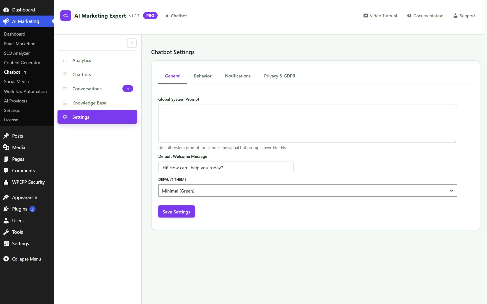
চিত্র ৬.৫: চ্যাটবট ডিসপ্লে ও আচরণগত সেটিংস
৭. ওয়ার্কফ্লো অটোমেশন V2 (ক্যানভাস ও কার্ট রিকভারি)
একটি শক্তিশালী নোড-ভিত্তিক অটোমেশন ইঞ্জিন যা একটি ভিজ্যুয়াল ক্যানভাসে ট্রিগার, কন্ডিশন, ডিলে এবং মার্কেটিং অ্যাকশন সংযুক্ত করে:
৭.১ ওয়ার্কফ্লো অ্যানালিটিক্স
অটোমেটেড কাস্টমার জার্নিগুলোর মোট এক্সিকিউশন সংখ্যা, কমপ্লিশন রেট এবং উদ্ধারকৃত আয়ের পরিমাণ পর্যবেক্ষণ করুন।
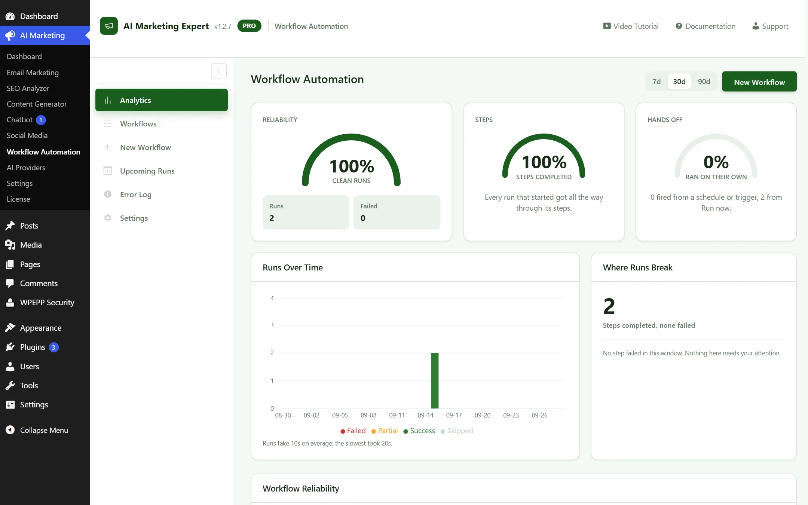
চিত্র ৭.১: অটোমেশন এক্সিকিউশন ও রেভিনিউ রিকভারি মেট্রিক্স
৭.২ ওয়ার্কফ্লো ডিরেক্টরি
সহজ অন/অফ টগল সুইচ এবং কুইক-এডিট সুবিধার মাধ্যমে সমস্ত সক্রিয়, পজ করা এবং ড্রাফট ওয়ার্কফ্লো নিয়ন্ত্রণ করুন।
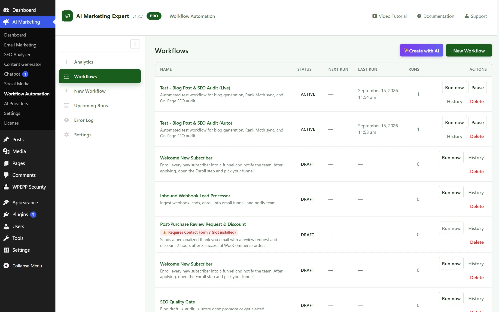
চিত্র ৭.২: ওয়ার্কফ্লো ডিরেক্টরি ও স্ট্যাটাস সুইচসমূহ
৭.৩ ভিজ্যুয়াল ক্যানভাস বিল্ডার কোর ইঞ্জিন
একটি ইন্টারঅ্যাক্টিভ React Flow ক্যানভাসে ট্রিগার, কন্ডিশন, টাইমার এবং অ্যাকশনগুলো সহজে ড্র্যাগ, ড্রপ ও কানেক্ট করুন।
টাইমিং নোড: Wait / Delay নোড (নির্দিষ্ট সংখ্যক ঘণ্টা বা দিনের জন্য পরবর্তী স্টেপ স্থগিত রাখা)।
লজিক নোড: If/Else কন্ডিশন (যেমন পূর্ববর্তী ইমেইল ওপেন হয়েছে কিনা অথবা অর্ডারের পরিমাণ $১০০ ছাড়িয়েছে কিনা যাচাই করা)।
নোড সংযোগ করা:
একটি নোডের আউটপুট হ্যান্ডেল থেকে টেনে অন্য নোডের ইনপুট হ্যান্ডেলে ড্রপ করুন। কোনো নোড বা সংযোগ মুছতে সেটিতে ক্লিক করে কিবোর্ডের Delete (মুছুন) বাটন চাপুন।
৭.৪ টেক্সট-টু-ওয়ার্কফ্লো এআই জেনারেটর হট ফিচার
ম্যানুয়াল সংযোগ তৈরি ছাড়াই সাধারণ ভাষায় লিখে সম্পূর্ণ মাল্টি-স্টেপ অটোমেশন গ্রাফ তৈরি করুন।
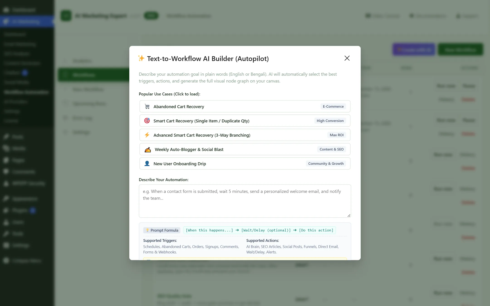
চিত্র ৭.৪: টেক্সট-টু-ওয়ার্কফ্লো এআই মোডাল — প্রম্পট থেকে সরাসরি কানেক্টেড নোড তৈরি করে
উদাহরণ প্রম্পট:
"কোনো ক্রেতা উকমার্স কার্ট ত্যাগ করলে ১ ঘণ্টা অপেক্ষা করে ১০% ডিসকাউন্ট সহ রিকভারি ইমেইল পাঠাও। যদি ২৪ ঘণ্টার মধ্যে না কেনে, তবে একটি শেষ রিমাইন্ডার পাঠাও।" — এআই সম্পূর্ণ গ্রাফটি স্বয়ংক্রিয়ভাবে সাজিয়ে দেবে।
৭.৫ উকমার্স পরিত্যক্ত কার্ট রিকভারি হট ফিচার
রিয়েল-টাইমে উকমার্সের চেকআউট ফিল্ড পর্যবেক্ষণ করে। কোনো ভিজিটর ইমেইল দিয়ে অর্ডার সম্পন্ন না করেই চলে গেলে সেশনটি পরিত্যক্ত কার্ট হিসেবে সেভ হয়।
১-ক্লিক ডিপ রিকভারি লিঙ্ক:
রিকভারি ইমেইলে {{recovery_url}} মার্জ ট্যাগ যুক্ত করুন। ক্রেতারা এই লিঙ্কে ক্লিক করলেই চেকআউটে তাদের পণ্যাদি এবং কুপন কোড পুনরায় স্বয়ংক্রিয়ভাবে লোড হয়ে যাবে।
সিঙ্গেল-কোয়ান্টিটি সেফটি প্রটেকশন:
ক্রেতা রিকভারি ইমেইলে বারবার ক্লিক করলেও পণ্যের পরিমাণ ডাবল (যেমন ১ থেকে ২) হয়ে যাবে না, যা গ্রাহকদের ঝামেলামুক্ত কেনাকাটার নিশ্চয়তা দেয়।
৭.৬ টেমপ্লেট পিকার
তৈরি ফানেলগুলো থেকে পছন্দ করুন: Abandoned Cart Recovery, Welcome Drip Series, Post-Purchase Review Request, এবং Win-Back Campaigns।
৮. এআই প্রোভাইডার সেটআপ (মডেল রাউটিং ও স্মার্ট ফলব্যাক)
AIME-তে রয়েছে একটি মাল্টি-ইঞ্জিন এআই রাউটিং লেয়ার। একটিমাত্র কোম্পানির উপর নির্ভর না করে আপনার নিজস্ব এপিআই কী AES-256-GCM দিয়ে এনক্রিপ্ট করে যুক্ত করুন, যাতে আপনার অটোমেশন ৩৬৫ দিন অবিরাম সচল থাকে।
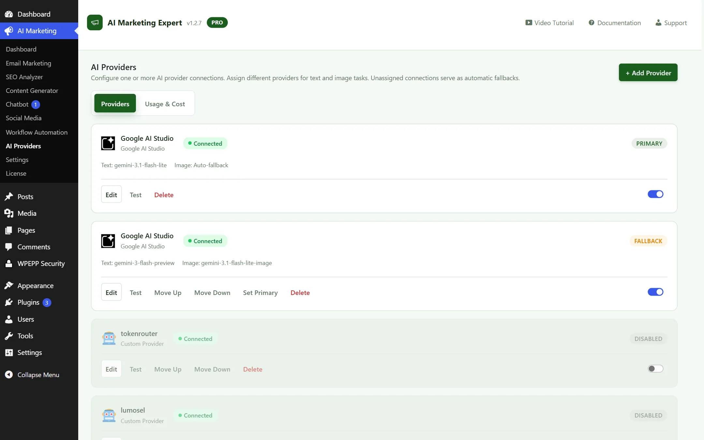
চিত্র ৮.১: এআই প্রোভাইডার্স ম্যানেজমেন্ট — Google Gemini, OpenRouter, OpenAI এবং Anthropic Claude রাউটিং হাব
সমর্থিত এআই ইঞ্জিনসমূহ ও সেটআপ নির্দেশিকা
Google Gemini (আজীবন ১০০% বিনামূল্যে): Google AI Studio থেকে একটি ফ্রি API কী সংগ্রহ করুন। ডিফল্ট gemini-1.5-flash মডেলটি কোনো ক্রেডিট কার্ড ছাড়াই সম্পূর্ণ বিনামূল্যে প্রতি মিনিটে ১৫টি রিকোয়েস্ট (RPM) এবং ১ মিলিয়ন টোকেন কনটেক্সট উইন্ডো অফার করে।
OpenRouter (DeepSeek ও ওপেন সোর্স মডেলসমূহ): একটিমাত্র OpenRouter কী যুক্ত করে DeepSeek R1, Llama 3.3 70B এবং Qwen 2.5-এর মতো দারুণ সাশ্রয়ী মডেলগুলো নামমাত্র খরচে ব্যবহার করুন।
OpenAI: সরাসরি কানেকশন পান gpt-4o এবং gpt-4o-miniমডেলগুলোর জন্য, সাথে ভেক্টর নলেজ বেসের জন্য টেক্সট এমবেডিংসের সুবিধা।
Anthropic Claude: কানেক্ট করুন claude-3-5-sonnet আর্টিকেল স্টুডিওতে উচ্চমানের হিউম্যানাইজড লেখা পাওয়ার জন্য।
স্মার্ট মাল্টি-মডেল ফলব্যাক চেইন
যদি কোনো বড় ক্যাম্পেইনের সময় মূল এআই প্রোভাইডারের লিমিট শেষ হয়ে যায়? AIME স্বয়ংক্রিয় ফলব্যাক ক্যাসকেডের মাধ্যমে এটি সমাধান করে:
প্রাইমারি টিয়ার: Google Gemini 1.5 Flash (সম্পূর্ণ বিনামূল্যে চালানোর জন্য)।
ফলব্যাক টিয়ার ১: OpenRouter-এর মাধ্যমে DeepSeek R1 (প্রতি ১০ লাখ টোকেনে মাত্র $০.১৪)।
ফলব্যাক টিয়ার ২: OpenAI GPT-4o-mini।
অটোমেটিক হ্যান্ডশেক: যদি জেমিনি কোনো 429 Too Many Requests বা ৫০৩ গেটওয়ে এরর দেয়, AIME মাত্র ৩০০ মিলিসেকেন্ডের মধ্যে প্রম্পটটি ফলব্যাক ১-এ পাঠিয়ে দেয়। আপনার চ্যাটবট বা অটোমেশন কখনোই বন্ধ হবে না।
টাস্ক-ভিত্তিক মডেল রাউটিং
গতি, খরচ এবং সৃজনশীলতার উপর ভিত্তি করে বিভিন্ন মডিউলে সেরা মডেলগুলো বরাদ্দ করুন:
কাস্টমার সাপোর্ট চ্যাটবট: রাউট করুন gemini-1.5-flash যাতে ১ সেকেন্ডেরও কম সময়ে দ্রুত রিপ্লাই দেওয়া যায়।
লং-ফর্ম আর্টিকেল স্টুডিও: রাউট করুন claude-3-5-sonnet বা deepseek-r1 গবেষণামূলক ও সাবলীল লেখার জন্য।
এসইও মেটা ও কিওয়ার্ড ক্লাস্টারিং: রাউট করুন gpt-4o-mini নির্ভুল স্ট্রাকচার্ড JSON আউটপুটের জন্য।
লেটেন্সি পিং ও টোকেন সেফগার্ড
প্রতিটি প্রোভাইডার কার্ডে একটি লাইভ টেস্ট কানেকশন বাটন থাকে যা লেটেন্সি বা গতি পরীক্ষা করে (যেমন: Gemini: ১৮২ms [সক্রিয়])। অপ্রত্যাশিত বিল এড়াতে আপনি মাসিক সর্বোচ্চ টোকেন সীমাও বেঁধে দিতে পারেন।
চিত্র ৯.১: জেনারেল সেটিংস — কার্ট ট্র্যাকিং লিমিট, রোল পারমিশন এবং ডেটাবেস হাইজিন
মূল কনফিগারেশন অপশনসমূহ:
কার্ট রিটেনশন সময়সীমা: পরিত্যক্ত কার্টের তথ্য ডেটাবেসে কতদিন সংরক্ষিত থাকবে (ডিফল্ট: ৩০ দিন)।
রোল-ভিত্তিক অ্যাক্সেস পারমিশন: কোন কোন ওয়ার্ডপ্রেস ইউজার রোল (যেমন Editor, Shop Manager) এই প্লাগইনে ঢুকতে পারবে তা নির্ধারণ করুন।
আনইন্সটল ক্লিনআপ: প্লাগইন ডিলিট করার সময় সব টেবিল ও সেটিংস পুরোপুরি মুছে ফেলা হবে কিনা তা নির্ধারণ করুন।
ডেটাবেস অপটিমাইজেশন ও পরিচ্ছন্নতা:
মেয়াদোত্তীর্ণ গেস্ট কার্ট এবং ট্রানজিয়েন্ট লগ প্রতি সপ্তাহে স্বয়ংক্রিয়ভাবে ক্লিন করুন। এটি আপনার ওয়ার্ডপ্রেস ডেটাবেসকে ফাস্ট, হালকা ও ঝামেলামুক্ত রাখে।
ওয়ার্ডপ্রেসের ডিফল্ট ক্রন (wp-cron.php) কেবল তখনই চলে যখন কেউ আপনার ওয়েবসাইট ভিজিট করে। কম ভিজিটর থাকা সাইটগুলোতে এর ফলে কার্ট রিকভারি ইমেইল বা শিডিউলড পোস্ট ঘণ্টার পর ঘণ্টা দেরিতে যেতে পারে। এক্সটার্নাল সার্ভার ক্রন সেট করলে এই বিলম্ব পুরোপুরি দূর হয়।
ক্যানোনিকাল এক্সটার্নাল ক্রন ওয়েবহুক URL:
যেকোনো সার্ভার থেকে এক্সিকিউট করতে আপনার সাইটের ডেডিকেটেড ক্রন ওয়েবহুক ও সিক্রেট টোকেন ব্যবহার করুন:
ক্লিক করুন Create Cronjob বাটনে ক্লিক করুন এবং আপনার সম্পূর্ণ ওয়েবহুক লিঙ্কটি পেস্ট করুন।
এক্সিকিউশন শিডিউল সেট করুন Every 5 minutes (প্রতি ৫ মিনিট) এবং সেভ করে দিন।
সমস্যা সমাধান ও বাস্তবমুখী সতর্কতা
১. কার্ট রিকভারি ইমেইল সেন্ড হচ্ছে না
কারণ: WP-Cron সচল নেই, অথবা কোনো ক্যাশিং প্লাগইন চেকআউট স্ক্রিপ্ট ক্যাশ করে রেখেছে।
সমাধান: উপরে বর্ণিত নিয়মে এক্সটার্নাল ক্রন সেট করুন এবং WP Rocket বা LiteSpeed ক্যাশে /checkout/ এবং /cart/ ইউআরএলগুলোকে "Never Cache" নিয়মে যুক্ত করুন।
২. ইমেইল স্প্যাম ফোল্ডারে চলে যাচ্ছে
কারণ: সার্ভারের আন-অথেনটিকেটেড সাধারণ PHP mail() ফাংশন ব্যবহার বা ডোমেইনে SPF/DKIM রেকর্ড না থাকা। বা ডোমেইনে ভ্যালিড SPF/DKIM/DMARC রেকর্ড অনুপস্থিত থাকা।
সমাধান: একটি নির্ভরযোগ্য ডেডিকেটেড SMTP কনফিগার করুন ইমেইল মার্কেটিং → SMTP (যেমন Gmail App Password, Brevo বা SendGrid) এবং আপনার ডোমেইনের DNS-এ SPF, DKIM ও DMARC রেকর্ড ভেরিফাই করুন।
৩. এআই "Rate Limit Exceeded" এরর
কারণ: বড় ব্যাচ প্রসেসিংয়ের সময় ফ্রি গুগল জেমিনি অ্যাকাউন্টের প্রতি মিনিটের ১৫টি রিকোয়েস্টের সীমা অতিক্রম করা।
সমাধান: মধ্যে Settings → General-এ গিয়েব্যাকগ্রাউন্ড ব্যাচ সাইজ কমিয়ে ৫ করুন, অথবা একটি OpenAI বা OpenRouter ফলব্যাক কী যুক্ত করুন।
৪. চ্যাটবট উইজেট ওয়েবসাইটে দেখা যাচ্ছে না
কারণ: থিমের স্ক্রিপ্টের সাথে কনফ্লিক্ট বা ব্রাউজার কনসোলে কোনো জাভাস্ক্রিপ্ট এরর থাকা।
সমাধান: চ্যাটবট সক্রিয় আছে কিনা নিশ্চিত করুন Chatbot → Settings পেজে, আপনার ব্রাউজার ও সাইটের ক্যাশ ক্লিয়ার করুন এবং নিশ্চিত করুন যে অন্য কোনো প্লাগইন ওয়ার্ডপ্রেস REST API ব্লক করছে না।
সচরাচর জিজ্ঞাসিত প্রশ্ন (FAQ)
কোনো ধরণের মাসিক সাবস্ক্রিপশন ফি আছে কি?
একেবারেই না! প্লাগইনটি সরাসরি আপনার নিজস্ব ওয়ার্ডপ্রেস হোস্টিংয়ে চলে। Google AI Studio-এর ফ্রি টায়ার কানেক্ট করলে এআই ব্যবহারের জন্যও $০ খরচ হয়। প্রতি সাবস্ক্রাইবারে কোনো অতিরিক্ত চার্জ ছাড়াই আপনার ডেটার ১০০% মালিকানা আপনার হাতেই থাকবে।
আমি কি Mailchimp বা FluentCRM থেকে কন্টাক্ট মাইগ্রেট করতে পারব?
হ্যাঁ, পারবেন। আপনার আগের প্ল্যাটফর্ম থেকে সাবস্ক্রাইবার লিস্ট CSV আকারে এক্সপোর্ট করুন এবং ইমেইল মার্কেটিং → ইমপোর্ট / এক্সপোর্ট -এ গিয়ে ফিল্ডগুলো সিলেক্ট করে মাত্র কয়েক মিনিটে ট্যাগ সহ সব কন্টাক্ট ইমপোর্ট করে নিন।
এই প্লাগইন কি আমার ওয়েবসাইটের স্পিড ধীর করে দেবে?
একেবারেই না । ফ্রন্ট-এন্ড ট্র্যাকিং স্ক্রিপ্টটি 5kb এর নিচে এবং অ্যাসিঙ্ক্রোনাসভাবে লোড হয় । সমস্ত ভারী এআই জেনারেশন এবং ইমেল ব্যাচিং ক্রোন দ্বারা পরিচালিত বিচ্ছিন্ন পটভূমি প্রক্রিয়াগুলিতে চলে ।
গ্রাহকদের ব্যক্তিগত ডেটা কি কোনো থার্ড-পার্টি এআই প্রোভাইডারের কাছে পাঠানো হয়?
না। গ্রাহকদের ইমেইল অ্যাড্রেস বা যোগাযোগের তথ্য কখনোই কোনো এআই প্রোভাইডারের কাছে পাঠানো হয় না। এআই মডেলগুলো কেবল কপিরাইটিং, আর্টিকেল লেখা এবং চ্যাটবটের উত্তর তৈরির জন্যই ব্যবহৃত হয়।
১-২ মিনিটের মাইক্রো-ভিডিও (🎬 ৭টি ভিডিও লেসন ও গাইড)
সময় নষ্ট না করে দ্রুত কাজ শুরু করার উপযোগী সংক্ষিপ্ত ও বাস্তবধর্মী ভিডিও টিউটোরিয়াল:
▶
লেসন ১: ফ্রি এআই সেটআপ
১:৪৫ মিনিট
১. পাঁচ মিনিটে ফ্রি জেমিনি এআই কানেকশন
ফ্রি জেমিনি API কী সংগ্রহ ও কানেকশন ভেরিফাই করার ধাপে ধাপে ভিডিও গাইড।
[00:00 - 00:25] Google AI Studio-তে API কী তৈরি
[00:25 - 01:10] AIME AI Providers-এ ক্রেডেনশিয়াল সেভ করা
[01:10 - 01:45] কানেকশন টেস্ট ও মডেল সিলেকশন
▶
লেসন ২: B2B লিড ফাইন্ডার
২:১০ মিনিট
২. ভেরিফাইড লিড অনুসন্ধান ও কোল্ড আউটরিচ
টার্গেট ইন্ডাস্ট্রি ফিল্টার করা এবং ভেরিফাইড লিডগুলো সরাসরি ইমেইল নার্চার সিকোয়েন্সে যুক্ত করা।
[00:00 - 00:35] পদবী, ইন্ডাস্ট্রি ও লোকেশন ফিল্টার সেট করা
৫.১ সোশ্যাল অ্যানালিটিক্স
সংযুক্ত সকল সোশ্যাল চ্যানেলে পোস্টের এনগেজমেন্ট, ক্লিক-থ্রু এবং ফলোয়ারদের ইন্টারঅ্যাকশন বিশ্লেষণ করুন।
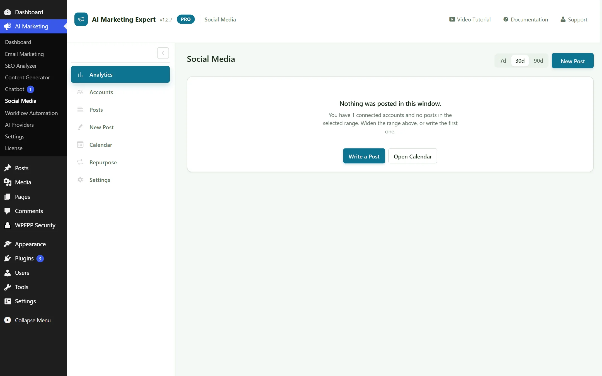